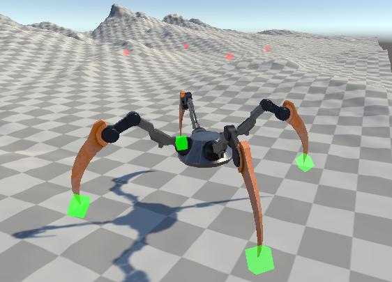
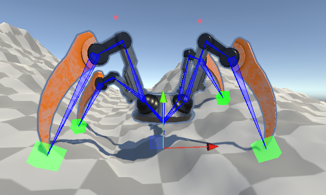

DEVELOPMENT
INSPIRATION
If Procedural Animation had a final boss this video would be it, the second I saw it I was hooked! I knew I needed to try out the concept for myself, "How hard could it be"! Commonly used in many video games for simple animations such as the head looking towards an object or a hand touching the wall, I found it was quite effective used on multi leg creatures, which made me interested in using a spider model for this project as it allowed me to create expressive leg movements that bend and step clearly.
IMPLEMENTATION

Procedural Animation enables a rigged object to be animated using an algorithm. In my project I successfully implemented a Procedural Walking Animation on a Spider Model. The algorithm works by scanning the environment allowing for the feet to sit dynamically on the ground while also working out the distance needed to take a new step.
Through research of existing Procedural Animation projects I identified for a rig to be moved using an algorithm, inverse kinematics and constraints needed to be applied to allow for realistic limb movements. Thanks to Unitys Animation and Rigging package, IK algorithms rigs where implemented onto the characters limbs allowing for them to be dynamically positioned on the environment.
CHALLENGES
One of the main challenges and first challenges I had to overcome was keeping the models feet stuck to the ground. This problem persisted for quite a while creating very annoying but entertaing "bugs" (no pun intented) making the legs of the spider fly sporadically in the air! Raycasts became my best friend to fix this by allowing rays to point down and touch the floor this allows the spider to scan the environment constantly while placing its feet in the positon of the rays creating realistic foot placement.
FINAL OUTCOME
This is my proudest and biggest project I have ever completed, I am so pleased with the final outcome. This project shows a good understanding of procedural techniques which help enchance the realism and adaptabilitiy of 3D characters across a virtual world, in some contexts more so than traditional keyframe animation. Without the use of any 3D modelling and animation software I was able to create a very effective animation, which is transferable across multiple 3D models. I found this project has improved my knowledge on character rigs and Inverse Kinematics, which I can and already have been able to transfer these skills into Maya for some of my other projects such as the ATAT 3D Modelling Project.